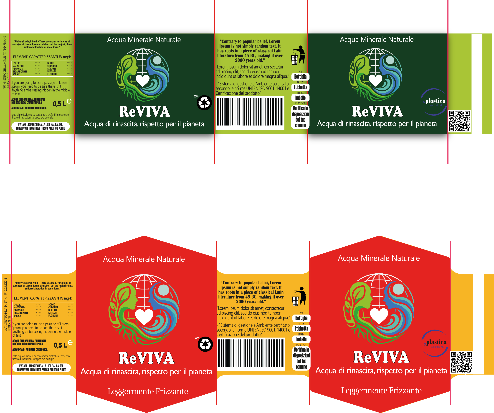

Progetto sostenibile sulle bottiglie d'acqua in PET
Negli ultimi decenni, il packaging design delle bottiglie d’acqua ha avuto un ruolo centrale nel mondo contemporaneo sia per i consumi che per la produzione. La definizione di packaging non è solo l’involucro di un prodotto, ma simbolo di praticità e attenzione per l’impatto ambientale. In particolare, l’utilizzo diffuso della plastica monouso, come il PET, ha contribuito in modo significativo alla diffusione globale dei rifiuti, evidenziando la necessità di ripensare la produttività e la progettualità tenendo bene a mente i principi dell’eco-design. A tal propisito presento la mia tesi: come finalità, propongo di indagare il ruolo del design nel ripensamento del packaging delle bottiglie d’acqua, con l’obiettivo di sviluppare soluzioni alternative a quelle industriali convenzionali. In particolare, l’elaborato mira a esplorare strategie progettuali sostenibili che riducano l’impatto ambientale lungo l’intero ciclo di vita del prodotto, cercando un approccio consapevole, green e responsabile. il design diventa uno strumento attivo di cambiamento, non solo dal punto di vista estetico e funzionale, ma anche etico e ambientale; come partenza, questo lavoro inizia con un’analisi approfondita del packaging attuale delle bottiglie d’acqua, con particolare attenzione ai materiali utilizzati, ai processi produttivi e alla filiera di distribuzione. Il progetto si fonda sui principi dell’eco-design e mira a ripensare la bottiglia d’acqua non solo come contenitore, ma come un elemento inserito in un sistema più ampio, in cui materiali, forma, funzione e ciclo di vita riescano a raggiungere gli obbiettivi di sostenibilità. La proposta vuole dimostrare come sia possibile ridurre l’impatto ambientale facendo scelte consapevoli, come per esempio: la selezione di materiali innovativi o riciclati, la semplificazione del design e l’ottimizzazione della produzione e dello smaltimento, aprendo scenari futuri più responsabili ma soprattutto sostenibili.


Dalle linee di costruzione si è creata la bottiglia incentrandola su uno studio di nervature riprese dalla pigna.


grandezze delle viste: sinistra 500ml, destra 1000ml.


Misure delle viste: inferiore e dall'alto.

Sagomatura tappo.


Versione Realistica.
Visione Realistiche Bottiglia Romboidale


Il PET è uno dei materiali più utilizzati per la produzione di bottiglie grazie alla sua leggerezza, resistenza e riciclabilità.
Se raccolto e riciclato correttamente, può essere trasformato in nuovo materiale (rPET), riducendo il consumo di plastica vergine e l'impatto ambientale.
Le bottiglie in PET destinate al contatto con gli alimenti sono sottoposte a rigorosi controlli e, se conformi alle normative vigenti, sono considerate sicure per l'uso previsto.
Migliorare il design e favorire il riuso e il riciclo significa contribuire a un modello di produzione più sostenibile e orientato verso un'economia circolare.
Una corretta gestione dei rifiuti è fondamentale per ridurre l'impatto ambientale delle bottiglie in PET.
Le direttive europee promuovono la raccolta differenziata, il riciclo e il riutilizzo dei materiali per favorire un'economia circolare.
Conferire le bottiglie negli appositi contenitori e seguire le indicazioni riportate sulle etichette permette di migliorare il recupero della plastica e di ridurre il consumo di nuove risorse.
Anche piccoli gesti quotidiani possono contribuire a un sistema più sostenibile.


L'etichetta di una bottiglia in PET ha un ruolo importante anche dal punto di vista della sostenibilità.
Le normative vigenti richiedono informazioni chiare sul prodotto e favoriscono una corretta raccolta differenziata.
Per facilitare il riciclo è preferibile utilizzare etichette di dimensioni contenute, inchiostri e adesivi compatibili con i processi di riciclo e colori che non ne compromettano la qualità.
Tutti i materiali destinati al contatto con gli alimenti devono rispettare le normative europee sulla sicurezza.

Ogni categoria di rifiuti ha un proprio colore.
Per una corretta gestione dei rifiuti occorre gettarli negli appositi contenitori,
seguendo le regole della raccolta differenziata. È consigliabile vedere la disposizione del prorpio comune di appartenenza.
Ogni comune italiano ha il prorpio nome e colore per ogni rifiuto.


Costruzione etichetta per bottiglia romboidale, con variante.

Armonia cromatica,
costruzione del testo e immagine nello spazio disponibile


Applicazione etichetta su bottiglia romboidale.


Realizzazione del rendering della bottiglia romboidale


Realizzazione rendering più applicazione etichetta viste: frontale e laterale.


Elaborato visivo del modello della bottiglia romboidale prototipato.


Elaborato visivo del processo di stampa 3d bottiglia romboidale.

1000ml

500ml
Bisogna tenere presente queste grandezze per la bottiglia da 500ml e 1000ml.
Anche se non è una regole fissa e ufficiale al 100%,
perché non c'è una grandezza standard per i vari tipi di bottiglie.
Prendere come riferimento questa tabella può essere un buon inizio per costruire una bottiglia d'acqua.